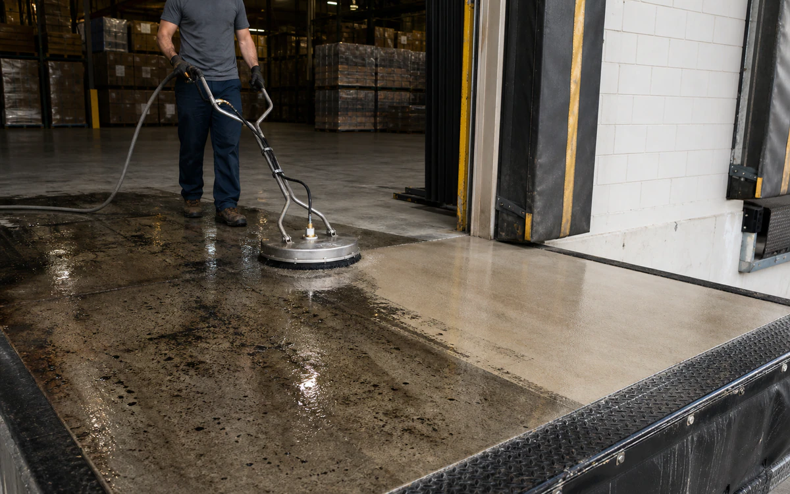
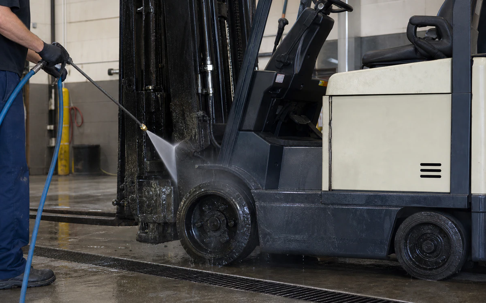

Industries › Warehousing & Distribution Centers
Lift oil and tire film while keeping the scrubber lane moving.
VertKleen CR HD wets and lifts heavy oil and tire film; MultiWash consolidates mixed floor, dock, and equipment soil into a simpler process.
- CleanConcrete and coated floors, docks, forklifts, pallet jacks, racks, battery areas, shop parts, and drains
- RemoveHydraulic oil, grease, tire polymer, battery-area residue kept segregated, cardboard dust, adhesive, and tracked grime
- MethodSweep, spot-treat, low-foam auto-scrub or controlled degrease, recover, rinse, and dry
- Operating limitsIsolate traffic and powered equipment, segregate food/packaging, protect rack coatings and battery systems, and control slip risk.
- See job fit, process, and results
Cleaning chemistry for Warehousing & Distribution Centers.
Compare passes, scrubber throughput, dry time, slip residue, rinse, and recovered wash water.
See VertKleen results

Recommended
VertKleen products for Warehousing & Distribution Centers.
Match the formula to the soil, surface, and cleaning process.
Applications and job fit
Remove oil, tire marks, and pallet grime from floors, docks, and material-handling equipment without leaving residue.
- Task
- Remove oil, tire marks, and pallet grime from floors, docks, and material-handling equipment without leaving residue.
- Asset / substrate
- Concrete and coated floors, docks, forklifts, pallet jacks, racks, battery areas, shop parts, and drains
- Soil / deposit
- Hydraulic oil, grease, tire polymer, battery-area residue kept segregated, cardboard dust, adhesive, and tracked grime
- Starting chemistry
- VertKleen CR HD, VertKleen MultiWash
- Concentration
- Use the current label range and establish the weakest effective auto-scrubber or spot-treatment dilution by floor/coating zone.
- Process controls
- Record floor temperature, dilution, dwell, pad/brush choice, scrub/recovery passes, rinse, and dry-to-traffic time.
- Shutdown / containment
- Isolate traffic and powered equipment, segregate food/packaging, protect rack coatings and battery systems, and control slip risk.
- Success check
- No visible oil or tire film, dry white-wipe, facility slip-resistance acceptance, and no foam/residue after the recovery pass.
Product files
Open application records or request the SDS/TDS for your team.
Scope the job